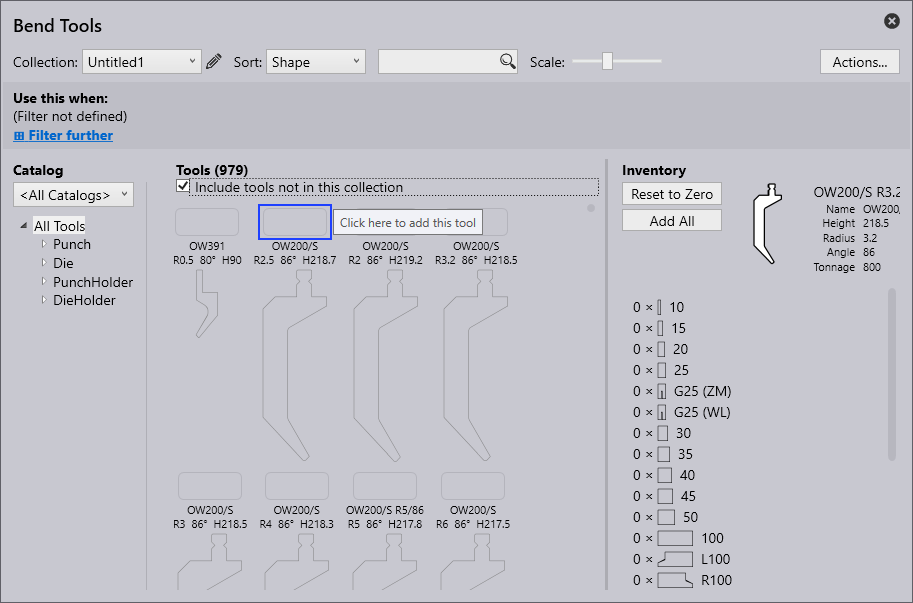

เครื่องมือดัด
คำศัพท์ที่ใช้ในการสร้างเครื่องมือดัดอธิบายไว้ด้านล่าง:
| ลำดับ | คำศัพท์ | ความหมาย |
|---|---|---|
1 |
รายการเครื่องมือ |
รายการ เครื่องมือที่ต้องการใช้งานสามารถเลือกได้ที่นี่ สามารถสร้างรายการเครื่องมือใหม่ได้ ด้วยตัวเลือก New |
2 |
การจัดเรียง |
เครื่องมือสามารถถูกจัดเรียงตามเกณฑ์ที่กำหนดได้ที่นี่ (เช่น ความสูง ชื่อ รูปร่าง รัศมี มุม ความกว้างของดาย ลำดับความสำคัญ การจัดการเครื่องมือ) |
3 |
การค้นหา |
สามารถค้นหาเครื่องมือโดยใช้แถบค้นหา ตัวอย่างเช่น สามารถค้นหาตามลำดับอักษรของชื่อเครื่องมือได้ และยังสามารถทำการค้นหาที่ซับซ้อนมากขึ้นได้ การ ค้นหานี้จะหาทุกเครื่องมือที่มีคำว่า UT หรือ EV ในชื่อ และตรงตามเงื่อนไขดังนี้: มุม ≤ 30, ความสูง ≥ 140, ความสูง ≤ 220, รัศมี = 1 |
4 |
มาตราส่วน |
ขนาดของมุมมองเครื่องมือ สามารถปรับได้ด้วยแถบเลื่อน |
5 |
การกระทำ |
สามารถทำการกระทำดังต่อไปนี้: - A เพิ่มแค็ตตาล็อก: เพื่อเพิ่มประเภทเครื่องจักรที่แตกต่างกัน - B รายการเครื่องมือใหม่: เพื่อสร้างชุดเครื่องมือใหม่ - C คัดลอกรายการเครื่องมือ: เพื่อคัดลอกชุดเครื่องมือที่สร้างไว้แล้ว - D ส่งออกรายการเครื่องมือ: รายการเครื่องมือปัจจุบันสามารถส่งออกเป็น ไฟล์ “.btools” - E นำเข้ารายการเครื่องมือ: รายการเครื่องมือสามารถนำเข้าเป็นไฟล์ “.btools” - F นำเข้าจาก ARV: เครื่องมือ สามารถนำเข้าจากไฟล์ ARV ได้ เครื่องมือเหล่านี้จะถูกบันทึกแบบกำหนดเองใน แค็ตตาล็อกเครื่องมือ (หากยังไม่มีจะถูกสร้างขึ้น ใหม่) - G นำเข้าจาก DXF: เครื่องมือสามารถนำเข้าจากไฟล์ DXF ได้ เครื่องมือ นี้จะถูกบันทึกแบบกำหนดเองในแค็ตตาล็อกเครื่องมือ (หากยังไม่มี จะถูกสร้างขึ้นใหม่) - H รีเซ็ตรายการเครื่องมือ: คืนค่ารายการเครื่องมือกลับสู่สถานะเริ่มต้น - I ยกเลิก: ปิด หน้าต่าง “Actions…” |
6 |
การจัดการเครื่องมือ |
แสดงภาพรวมของเครื่องมือที่เลือก สามารถทำการกระทำดังต่อไปนี้: - รีเซ็ตเป็นศูนย์: ยอดรวมทั้งหมดของเครื่องมือที่เลือก จะถูกลบออกจากรายการเครื่องมือปัจจุบัน -เพิ่มหนึ่งชุด: จะเพิ่มเพียงหนึ่งชุดของเครื่องมือที่เลือกไปยังรายการปัจจุบัน -เพิ่มความยาว: เพื่อเพิ่มความยาวของเครื่องมือ - เพิ่มทั้งหมด: สต็อกทั้งหมดของเครื่องมือที่เลือกจะถูกโหลด เข้าสู่รายการเครื่องมือปัจจุบัน สต็อกถูกกำหนดไว้ในรายการเครื่องมือ <All tools> - บันทึก: เพื่อบันทึกการเปลี่ยนแปลงที่ทำไป |
7 |
สต็อกเครื่องมือ |
แสดงสต็อกของเครื่องมือที่เลือก คลิกเมาส์ซ้ายเพื่อเพิ่มเซ็กเมนต์ |
8 |
เครื่องมือที่ไม่มีสต็อก |
เครื่องมือที่ไม่มี สต็อกจะไม่ถูกรวมไว้ในรายการเครื่องมือปัจจุบัน เมื่อคลิกที่ ช่องว่าง ระบบจะเพิ่มสต็อกมาตรฐานสำหรับเครื่องมือนั้น และเครื่องมือนั้น จะถูกเพิ่มเข้าไปในรายการเครื่องมือปัจจุบัน |
9 |
ลำดับความสำคัญ |
เครื่องมือจะถูกเลือกตามลำดับความสำคัญที่ผู้ใช้กำหนด 1 = เครื่องมือที่มีลำดับความสำคัญสูง 5 = เครื่องมือที่มีลำดับความสำคัญต่ำ |
10 |
พื้นที่แสดงเครื่องมือ |
ในพื้นที่แสดงเครื่องมือ เครื่องมือทั้งหมดจากรายการที่เลือกจะแสดงขึ้น เครื่องมือที่ไม่มี สต็อกก็สามารถแสดงได้ด้วยการเลือกช่อง "Include tools without inventory" |
11 |
ตัวกรองเครื่องมือ |
เครื่องมือในรายการปัจจุบันจะถูกจัด ตามประเภทและรูปร่าง การเลือกองค์ประกอบในโครงสร้างนี้จะเปิดใช้งานการกรอง |
12 |
แค็ตตาล็อก |
สามารถเลือกหนึ่งในหลายแค็ตตาล็อก เครื่องมือที่ติดตั้งไว้ (รวมถึง TRUMPF, custom และอื่นๆ) |
13 |
เงื่อนไขการกรอง |
เงื่อนไขการกรองสำหรับรายการเครื่องมือปัจจุบัน ซึ่งถูกใช้ โดยอัตโนมัติโดย auto-tooler สามารถใช้กับรายการเครื่องมือที่มีชื่อได้ แต่ไม่สามารถใช้กับรายการพิเศษ <All tools> สามารถกรองได้ ตามหลายปัจจัย เช่น เครื่องจักร วัสดุ ความหนาของแผ่น และอื่นๆ |
การสร้างรายการเครื่องมือ
-
หากต้องการสร้างรายการเครื่องมือใหม่ ให้คลิกปุ่ม Actions และเลือก New Tool-List

-
เปลี่ยนชื่อรายการเครื่องมือโดยการคลิกที่ไอคอนแก้ไข

-
ตามค่าเริ่มต้น รายการเครื่องมือใหม่จะแสดงเครื่องมือทั้งหมด รวมถึง Punch, Die, Punch Holder และ Die Holder แต่จะไม่ถูกเพิ่มเข้าในสต็อก ตรวจสอบให้แน่ใจว่าเลือกช่อง Include tools not in this collection แล้ว

-
หากต้องการเพิ่มเครื่องมือ ให้คลิกที่ช่องสี่เหลี่ยมเหนือชื่อเครื่องมือ แล้วกดปุ่ม ctrl+enter เพื่อเอาเครื่องมือออก


-
ตัวเลือก Use this when อนุญาตให้ผู้ใช้กรองและตั้งกฎสำหรับรายการใหม่ ตามเกณฑ์ต่างๆ
-
คลิก save เพื่อเพิ่มรายการเครื่องมือนี้ไปยังคอลเลกชัน
การเพิ่มกฎให้กับรายการเครื่องมือ
คลิกตัวเลือก Filter further เพื่อใช้กฎจากเกณฑ์การกรองที่มีอยู่
-
ครื่องจักร - หมายถึงเครื่องจักรที่ใช้สำหรับการดัด
-
วัสดุ - ระบุประเภทของวัสดุที่ถูกดัด
-
ความหนา - ระบุความหนาของวัสดุที่ถูกดัด
-
รัศมี - หมายถึงความโค้งของการดัด
-
พื้นผิว - อธิบายพื้นผิวภายนอกหรือการเคลือบผิวของวัสดุ
-
การปรับสภาพ - อธิบายกระบวนการก่อนหรือหลังการดัดที่ใช้กับวัสดุ เช่น การอบชุบด้วยความร้อน การเคลือบ หรือการชุบสังกะสี
-
ฟิล์ม - หมายถึงชั้นป้องกันหรือชั้นที่มีหน้าที่ใช้งานที่เคลือบบนวัสดุ
-
แท็ก - ป้ายกำหนดเองที่ใช้จัดประเภท กรอง และจัดระเบียบองค์ประกอบ เพื่อให้ระบุได้ง่ายขึ้น
| รายการเครื่องมือต้องมีเกณฑ์การกรองอย่างน้อยหนึ่งข้อก่อนจึงจะสามารถบันทึกได้ (มิฉะนั้น รายการนี้จะถูกใช้กับทุกชิ้นงาน) |

รูปด้านล่างแสดงตัวอย่างเกณฑ์ที่นำมาใช้เพื่อสร้างกฎ:
| เมื่อมีหลายรายการเครื่องมือที่ตรงตามความต้องการเครื่องมือ รายการที่ตรงที่สุดจะถูกนำมาใช้ |